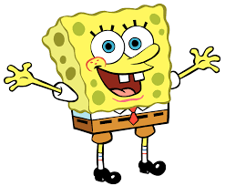

This website is about sponegbob and all things related to him. Quotes, Merchandise, and his voice actor will all be listed here (and maybe a few other things too) now lets start with spongebob himself! (This page is on sea level.)
Spongebob is the classic sponge that lives in a pineapple under the sea. He is a very outgoing sponge with autism (I bet you didn't know that) but that doesn't change him! He is friends with patrick (Who won't be referenced anywhere else because this is about spongebob NOT patrick). The two love to hang out together and go on wacky adventures (Jelly fishing obviously being the favorite activity) His voice actor is Tom Kenny who plays a bunch of other characters in tv shows. You might have heard one of his other characters without knowning it was him! Tom is a very outgoing person and is willing to do almost anything if its about spongebob. He really cherishs spongebob and it makes sense why.
Image made by themarioman56 on Deviantart
Mr Mcmonagle and those who want the full experience please inspect the page.